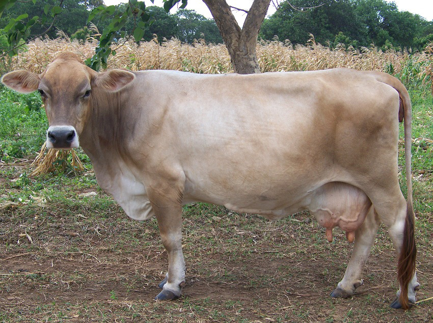
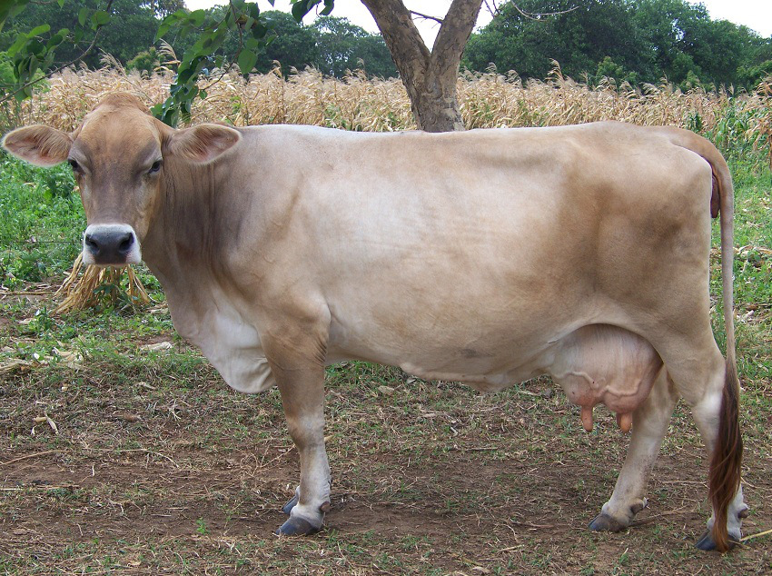

Farm Dean Dairy Limited
 search
search- Call us
searchPriority in a way to excel in dairy farming is by choosing a dairy breed that is suitable for your farm.
Below are captions of the different cattle breeds. They include; Ayshire, guernsey and jersey respectively.

 

Ayshire is a dairy breed